Agent 开发实战（核心）
什么是 Agent
具有复杂推理能力、记忆和执行任务手段的自主代理；
Agent = 规划 + 记忆 + 工具 + 行动
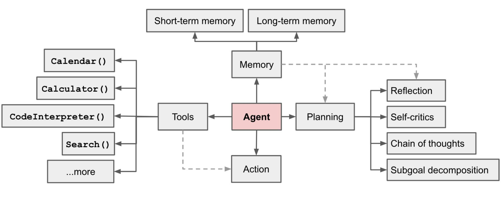
规划模块
-
任务分解
-
反思
- ReAct
- Reflexion
- Chain of Thought
- Graph of thought
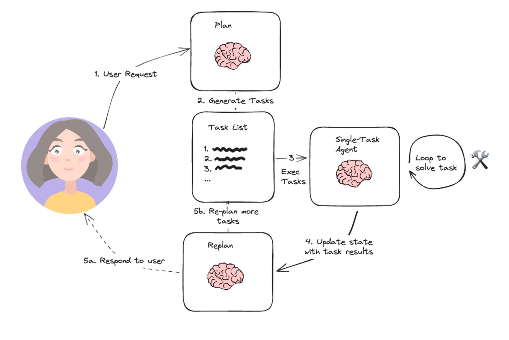
记忆模块
-
短期记忆
\- 上下文学习，长度有限 -
长期记忆
\- 向量数据库以及长期对话历史
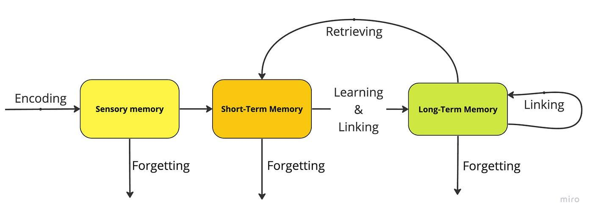
工具模块
- 搜索
- RAG
- 代码解释器
- 数学计算
- 其他任何 API 服务
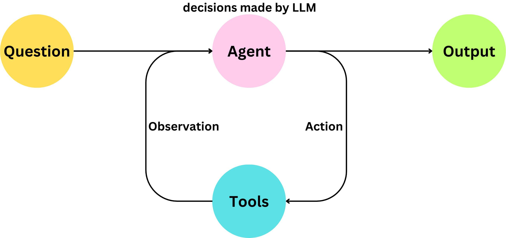
为什么要使用 Agent？
大模型就像人的大脑一样，如果你没有手脚和记忆，大脑无法独立行动；
将大模型视为大脑，Agent 视为完整的身体。
以 RAG 为例理解 Agent
传统 RAG 流程（左图）：从向量数据库检索文档相关内容后直接回答问题
RAG Agent 流程（右图）：从向量数据库检索文档后，进一步检查文档内容跟问题是否匹配，如果匹配则回答问题，如果不匹配，则改写问题重新检索，循环往复。
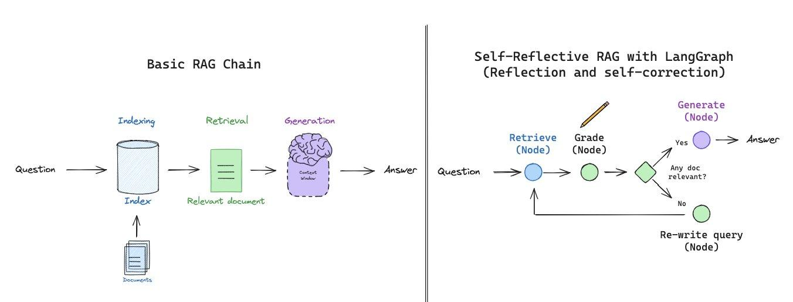
Agent 四种设计模式
反馈(Reflection)
定义：让 AI 模型自我反思和自我迭代，不断优化输出，提高任务准确率。
-
优点：
\- 提高准确性和质量 -
缺点：
\- 多次迭代和反馈耗时更长，成本更高 \- 反馈机制设计较为复杂
例子：
- Q：给 X 任务写一段代码
- A：def task(): xxx
- Reflection1：代码中第 3 行有 bug，正在修复中
- A：def task2(): xxx
- Reflection1：代码中第 10 行有 bug，正在修复中
- A：def task3(): xxx
- Reflection1：未发现错误
- A：最终代码为 def task3(): xxx
工具调用(Tools)
定义：让 AI 模型通过调用外部工具增强任务执行能力
-
优点：
\- 对于数学计算场景，通过代码解释器极大提高准确性 \- 扩充了模型能力范围 -
缺点：
\- 模型产生了新的外部依赖，故障概率可能变高 \- 多种工具协作增加了系统复杂性 -
例子：
\- 代码解释器 \- 搜索 \- 浏览网页 \- 发送邮件 \- 日历事件 \- 文生图
规划(Planning)
定义：让 AI 模型将复杂任务拆解为多个更小的步骤
-
优点：
\- 简化复杂任务 \- 提升复杂任务的准确性 -
缺点：
\- 依赖性过强，下一步依赖于上一步的准确性 \- 增加了任务时长和资源
例子：
- 生成一张图，一个小女孩坐在沙发上看书，姿势和示例图的男孩一样
- 规划拆解
- 检查示例图姿势，并生成骨架图
- 应用骨架图，生成目标图像
多智能体协作(Multi-agent Collaboration)
定义：让多个 Agent 分工协作提高任务执行效率和准确性
-
优点：
\- 提高任务效率 \- 应对复杂任务 -
缺点：
\- 协调多智能体设计复杂 \- 增加了任务时长和资源
从零开发一个 Agent
Agent RAG 概述
- 检索向量后，判断文本块是否包含问题答案
- 如包含则进行回答
- 如不包含则重新进入向量检索，匹配+1 块
- 最大循环次数 15
核心代码
llm = ChatOpenAI(model="gpt-4o")
k = 1
docs = ""
while True:
# 通过检索找到相关文档，每次循环增加一个检索文档数量，最大 15 个文档块
print("第", k, "次检索")
if k > 15:
break
docs = search_docs(user_query, k)
print("匹配到的文档块: ", docs)
template = Template(check_can_answer_system_prompt)
filled_prompt = template.substitute(question=user_query, context=docs)
# 检查上下文是否足够回答问题
messages = [
(
"system",
filled_prompt,
),
("human", "开始检查上下文是否足够回答问题。"),
]
llm_message = llm.invoke(messages)
content = llm_message.content
print("\nLLM Res: ", content, "\n")
if content == '{"can_answer": true}':
break
else:
k += 1
print("匹配到能够回答问题的知识库，开始进行回答\n")
从向量数据库匹配文档，并让大模型反思
每次循环增加一个文档块，直到能回答问题
文档块数量超过 15 个仍无法回答问题则放弃
改进方向
判断文本块大小，并使用切片策略，避免上下文超限
改进向量搜索策略，例如通过增加 offset 参数过滤已验证无法回答问题的文本块
判断能否回答问题环节使用 JSON Mode 获得更稳定的结构化输出
完整代码
lesson/module_5/demo_1/agent_rag.ipynb
Translation Agent 源码和架构分析
Translation Agent
吴恩达教授开源
基于反思工作流的智能翻译 Agent，模拟了人类翻译专家的思考过程，分成三个流程。 核心流程：
- 初始翻译：利用 LLM 对文本进行初步翻译，得到初步的翻译结果
- 翻译与改进：引导 LLM 对自身翻译结果进行反思，并提出修改意见，例如不准确、不流畅和语言习惯等问题
- 优化输出：根据 LLM 提出的改进意见对翻译结果再次进行优化，得到最终结果
完整流程
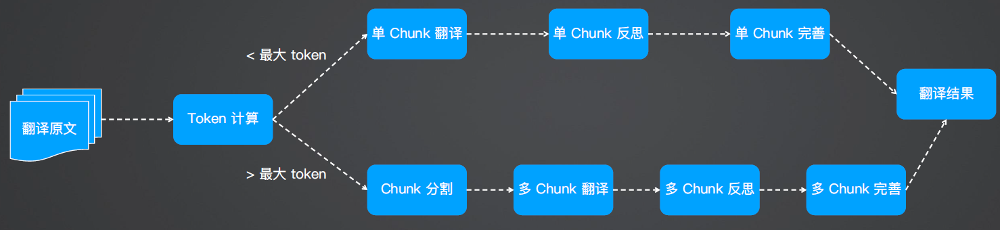
Translation Agent
pip install poetry
git clone <https://github.com/andrewyng/translation-agent.git>
cd translation-agent
poetry install
poetry shell # activates virtual environment
# 翻译古诗：
python module_5/demo_2/translation-agent/examples/example_script.py
源码解析：初始翻译
one_chunk_initial_translation：进行初始翻译
输入：原始文本
输出：初始译文
system_message = f"You are an expert linguist, specializing in translation from {source_lang} to {target_lang}."
translation_prompt = f"""This is an {source_lang} to {target_lang} translation, please provide the {target_lang} translation for this text. \\
Do not provide any explanations or text apart from the translation.
{source_lang}: {source_text}
{target_lang}:"""
translation = get_completion(translation_prompt, system_message=system_message)
从 {source_lang} 翻译为 {target_lang}，通过提示语“除了翻译之外，不要提供任何解释或文字”提升翻译的准确率（幻觉）
源码解析：结果反思
one_chunk_reflect_on_translation：对初始翻译结果进行反思，让LLM 给出优化建议
输入：原始文本、初始译文
输出：反思改进建议
核心提示语：
- 翻译的最终风格要符合 {coutry} 口语的风格
- 准确性：纠正、遗留或者未翻译的错误
- 流畅性：语法、拼写和标点规则，避免重复
- 风格：对翻译过后的文本同时考虑文化背景
- 术语：确保术语的一致性
- 列出具体、有用且有建设性的建议，以改进翻译。
system_message = f"You are an expert linguist specializing in translation from {source_lang} to {target_lang}. \\
You will be provided with a source text and its translation and your goal is to improve the translation."
if country != "":
reflection_prompt = f"""Your task is to carefully read a source text and a translation from {source_lang} to {target_lang}, and then give constructive criticism and helpful suggestions to improve the translation. \\
The final style and tone of the translation should match the style of {target_lang} colloquially spoken in {country}.
The source text and initial translation, delimited by XML tags <SOURCE_TEXT></SOURCE_TEXT> and <TRANSLATION></TRANSLATION>, are as follows:
<SOURCE_TEXT>
{source_text}
</SOURCE_TEXT>
<TRANSLATION>
{translation_1}
</TRANSLATION>
When writing suggestions, pay attention to whether there are ways to improve the translation's \\n\\
(i) accuracy (by correcting errors of addition, mistranslation, omission, or untranslated text),\\n\\
(ii) fluency (by applying {target_lang} grammar, spelling and punctuation rules, and ensuring there are no unnecessary repetitions),\\n\\
(iii) style (by ensuring the translations reflect the style of the source text and take into account any cultural context),\\n\\
(iv) terminology (by ensuring terminology use is consistent and reflects the source text domain; and by only ensuring you use equivalent idioms {target_lang}).\\n\\
Write a list of specific, helpful and constructive suggestions for improving the translation.
Each suggestion should address one specific part of the translation.
Output only the suggestions and nothing else."""
one_chunk_improve_translation：根据反思结果重新改进初始翻译结果，生成最终译文
输入：反思改进建议、原始文本、初始译文
输出：最终译文 核心提示语：
- 仔细阅读专家的建议和建设性批评
- 考虑准确性、流畅性、风格、术语、其他
- 只输出新的译文
system_message = f"You are an expert linguist, specializing in translation editing from {source_lang} to {target_lang}."
prompt = f"""Your task is to carefully read, then edit, a translation from {source_lang} to {target_lang}, taking into
account a list of expert suggestions and constructive criticisms.
The source text, the initial translation, and the expert linguist suggestions are delimited by XML tags <SOURCE_TEXT></SOURCE_TEXT>, <TRANSLATION></TRANSLATION> and <EXPERT_SUGGESTIONS></EXPERT_SUGGESTIONS> \\
as follows:
<SOURCE_TEXT>
{source_text}
</SOURCE_TEXT>
<TRANSLATION>
{translation_1}
</TRANSLATION>
<EXPERT_SUGGESTIONS>
{reflection}
</EXPERT_SUGGESTIONS>
Please take into account the expert suggestions when editing the translation. Edit the translation by ensuring:
(i) accuracy (by correcting errors of addition, mistranslation, omission, or untranslated text),
(ii) fluency (by applying {target_lang} grammar, spelling and punctuation rules and ensuring there are no unnecessary repetitions), \\
(iii) style (by ensuring the translations reflect the style of the source text)
(iv) terminology (inappropriate for context, inconsistent use), or
(v) other errors.
Output only the new translation and nothing else."""
优势和不足
优势：
- 基于反思工作流，翻译效果优于普通翻译工具
- 可定制化 不足
- 翻译效果依赖于 LLM 的智力
- 相比较商业翻译引擎在特定专业领域略显不足
- 使用有一定的门槛
- 基于固定流程，没有使用 Agent 自我思考的循环机制
LangGraph Agent 开发实战
核心概念
什么是 LangGraph
- LangGraph 是一个构建在 LangChain 之上的库，旨在为 Agent 添加循环运算的能力。
- LangChain 主要面向定义有向无环图，一旦前面的节点失败则后面的都会失败。
- LangGraph 引入了循环的功能，实现了有向有环图，从而实现更复杂的 Agent。
LangGraph = 构建 Agent 的框架.
核心概念：
- Stateful Graph
- Node
- Edges
Stateful Graph
Stateful Graph 定义有向有环图及其保存的状态，需要往里面添加 Node 才能形成有向有环图.
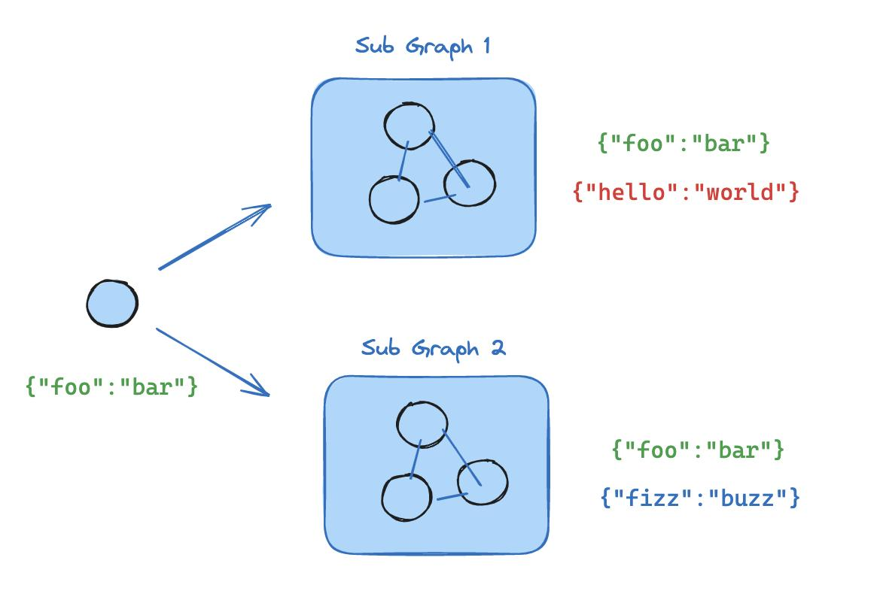
Node
Node 是 LangGraph 的节点，每个节点代表一个函数或一个计算步骤。
你可以定义节点来执行特定任务，例如处理输入、做出决策或与外部 API 交互。
节点相互依赖，可以是串行、并行和在某些节点循环运行
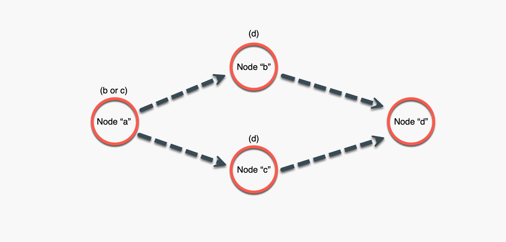
Edges
边连接图中的节点，定义计算流程（包括起始 Node 和终止 Node）。
LangGraph 支持条件 Edges，可以根据图的当前状态动态确定要执行的下一个节点。
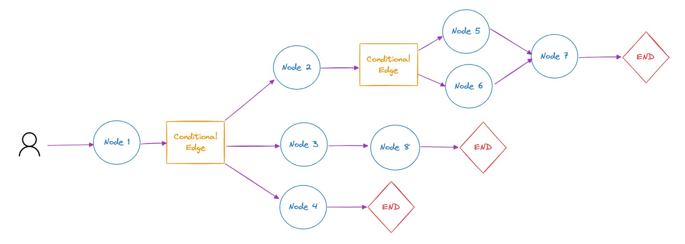
LangGraph Chat Example
llm = ChatOpenAI()
class State(TypedDict):
messages: Annotated[list, add_messages]
def chat(state: State):
return {"messages":[llm.invoke(state["messages"])]}
# 单节点
workflow = StateGraph(State)
workflow.add_node(chat)
workflow.set_entry_point("chat")
workflow.set_finish_point("chat")
graph = workflow.compile()
display(Image(graph.get_graph().draw_mermaid_png()))
核心概念：StateGraph、Node、Edges
aiops_Learning\Week4\LangGraph Agent\langgraph_chat_example.ipynb
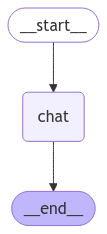
用 LangGraph 实现 Translation Agent
# 初始翻译
def initial_translation(state: State):
return {"messages": [llm.invoke(messages)]}
# 反思建议
def reflect_on_translation(state: State):
return {"messages": [llm.invoke(messages)]}
# 根据建议改善翻译结果
def improve_translation(state: State):
return {"messages": [llm.invoke(messages)]}
workflow = StateGraph(State)
workflow.add_node("initial_translation", initial_translation)
workflow.add_node("reflect_on_translation", reflect_on_translation)
workflow.add_node("improve_translation", improve_translation)
# 定义有向无环图
workflow.set_entry_point("initial_translation")
workflow.add_edge("initial_translation", "reflect_on_translation")
workflow.add_edge("reflect_on_translation", "improve_translation")
workflow.add_edge("improve_translation", END)
aiops_Learning\Week4\LangGraph Agent\langgraph_translation_agent.ipynb
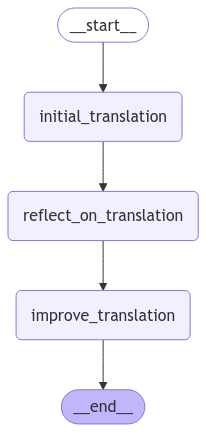
接入 LangSmith
LangSmith: Agent 开发的调试、日志和追踪平台，和 LangChain、LangGraph 原生集成
URL: https://smith.langchain.com/
申请 API Key SaaS 平台，超过一定用量需付费
os.environ["LANGCHAIN_TRACING_V2"] = "true"
os.environ["LANGCHAIN_ENDPOINT"] = "https://api.smith.langchain.com"
os.environ["LANGCHAIN_API_KEY"] = "YOUR_LANGCHAIN_API_KEY"
# LangSmith 项目名称，默认 default
os.environ["LANGCHAIN_PROJECT"] = "default"
Agent Trace 调用监控
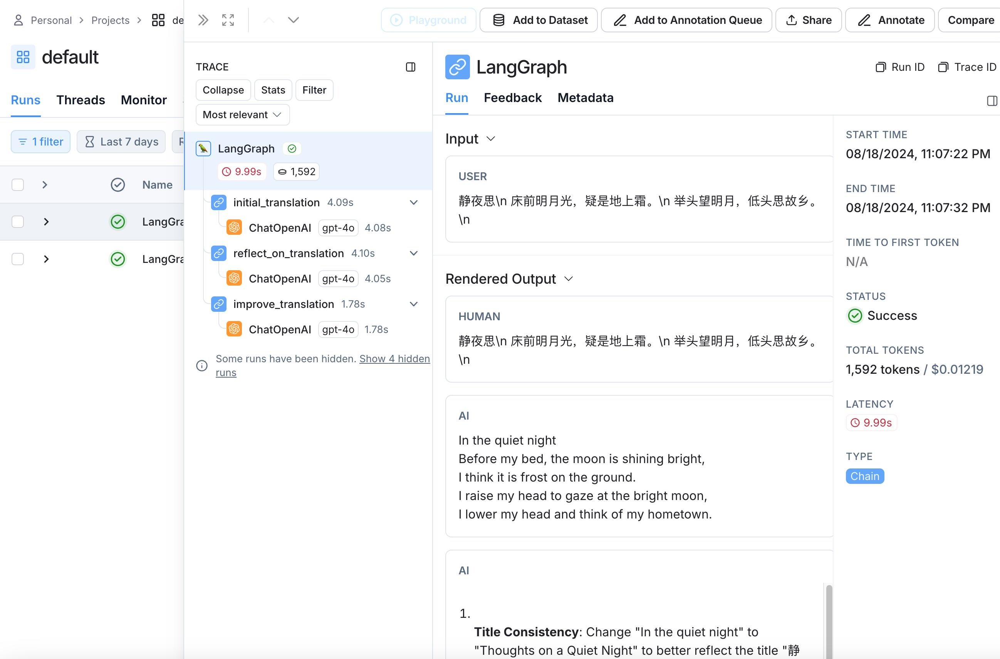
借助 LangGraph 实现 ReAct Agent
ReAcT Agent：根据用户输入进行思考，循环调用工具，直到有足够的信息来解决用户输入
例子
- User：帮我修改 payment 的工作负载，镜像为 nginx:v1.0
- Assistant：要修改 payment 工作负载，首先要获取 payment deployment
- Assistant：先调用 tools：get_deployment 获取工作负载
- Assistant：获取成功，再调用 tools：patch_deployment 修改工作负载
- Assistant：修改成功

如何控制循环结束？
借助 add_conditional_edges 实现动态控制，当条件函数返回 tools 字符串，则继续调用 tools 节点，当返回 end 字符串，则退出
条件函数 should_continue 的条件逻辑是检查 AI 消息是否需要继续调用工具
def should_continue(state: MessagesState) -> Literal["tools", "__end__"]:
messages = state["messages"]
last_message = messages[-1]
if last_message.tool_calls:
return "tools"
return "__end__"
# 继续进入 tools 的调用或者 __end__ 结束
workflow.add_conditional_edges(
"chat",
should_continue,
)
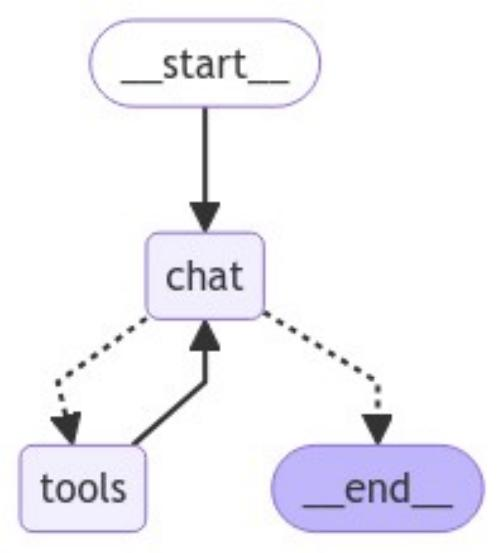
核心代码
def should_continue(state: MessagesState) -> Literal["tools", "__end__"]:
messages = state["messages"]
last_message = messages[-1]
if last_message.tool_calls:
return "tools"
return "__end__"
# LangGraph Tools：载入多个 Tools
tools = [get_deployment, apply_deployment]
model_with_tools = ChatOpenAI(model="gpt-4o", temperature=0).bind_tools(tools)
# ToolNode：将多个 Tools 转成 Node 节点
tool_node = ToolNode(tools)
workflow = StateGraph(MessagesState)
workflow.add_node("chat", call_model)
workflow.add_node("tools", tool_node)
workflow.add_edge("__start__", "chat")
# Conditional Edges：动态控制是否继续运行 Tools 或退出
workflow.add_conditional_edges(
"chat",
should_continue,
)
# 定义有向有环图
workflow.add_edge("tools", "chat")
app = workflow.compile()
ReAct Agent Trace 监控
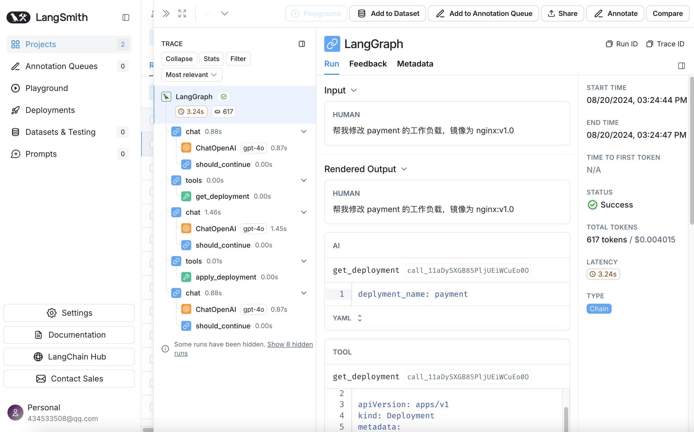
深入 LangGraph 并行 (Super-step)
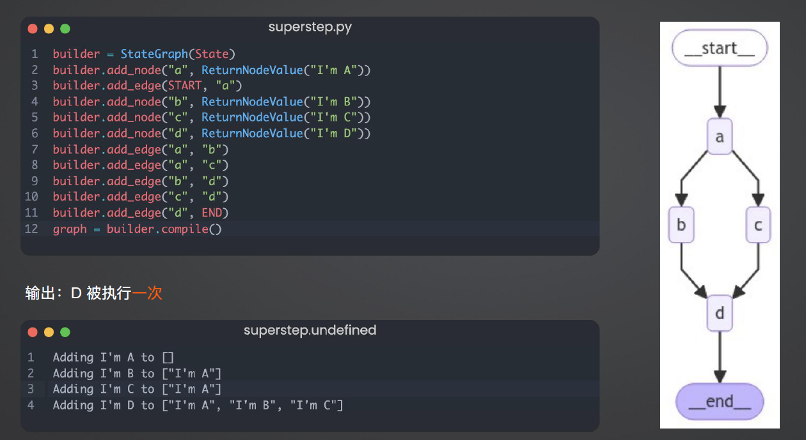
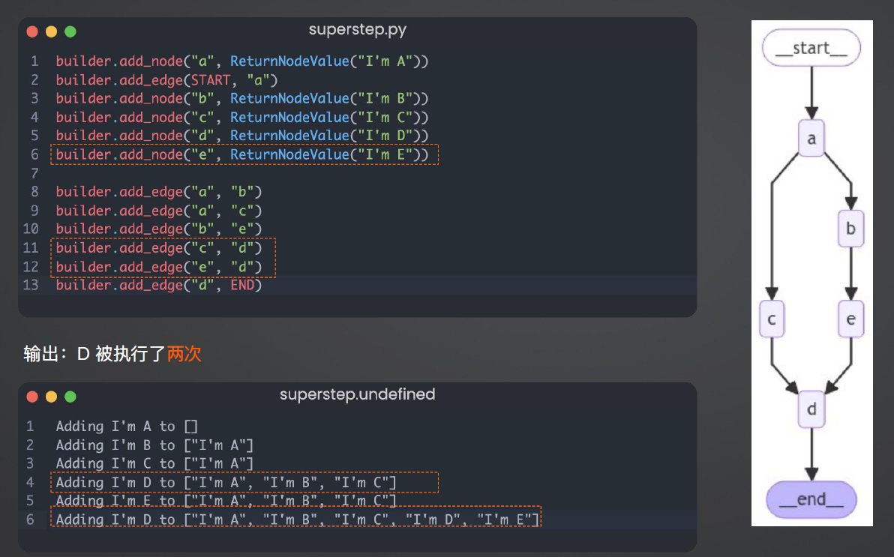
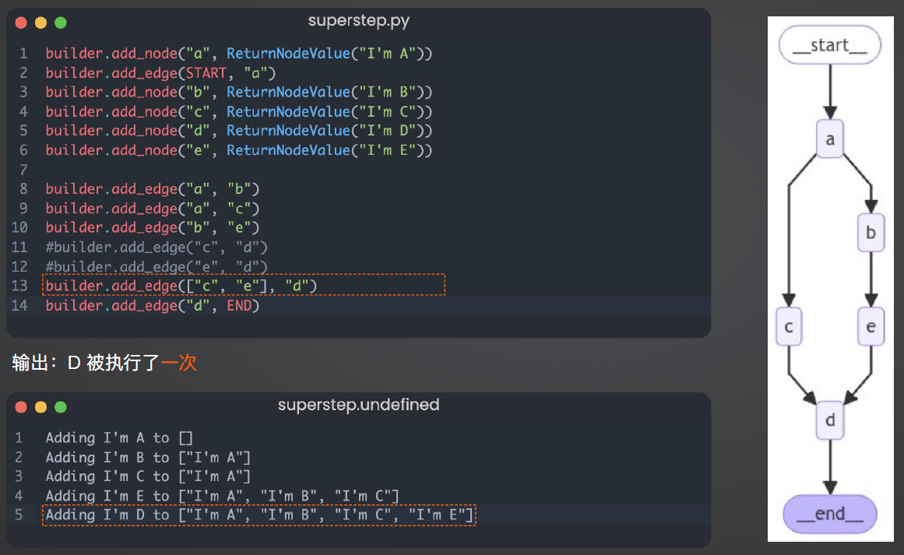
从零开发个人运维知识库 Agent
三种落地方式
-
无需代码开发，自托管部署：QAnything、RAGFlow、Open Web UI
-
SaaS 服务：Coze、Dify
-
二次开发，深度接入公司业务流程：LangChain、LangGraph
- 创建工单
- 读取内部运维数据
- 打通 IM 工具
- 根因分析
Coze 个人运维知识库
- 注册 https://www.coze.com/
- 打开 Personal -> Knowledge -> Create Knowledge 上传知识库文件并进行 Embedding
- 创建 Bot
- 在 Knowledge -> Text 下点击 + ，添加刚才创建的知识库
- 在 Source 一栏开启 Show source
- 在右侧开始调试，提问：你知道 payment 服务是谁维护吗？
- 发布 Bot，获得一个公网访问链接，例如：https://www.coze.com/store/bot/7404669938810142727?bot_id=true
Coze 参数配置
LangGraph 实现自适应 RAG Agent
基于论文： https://arxiv.org/abs/2403.14403 核心点：
- Web 搜索工具：针对近期事件的搜索
- 自适应 RAG 工具：针对知识库相关问题
- 路由器：判断问题交由 Web 搜索还是RAG 处理
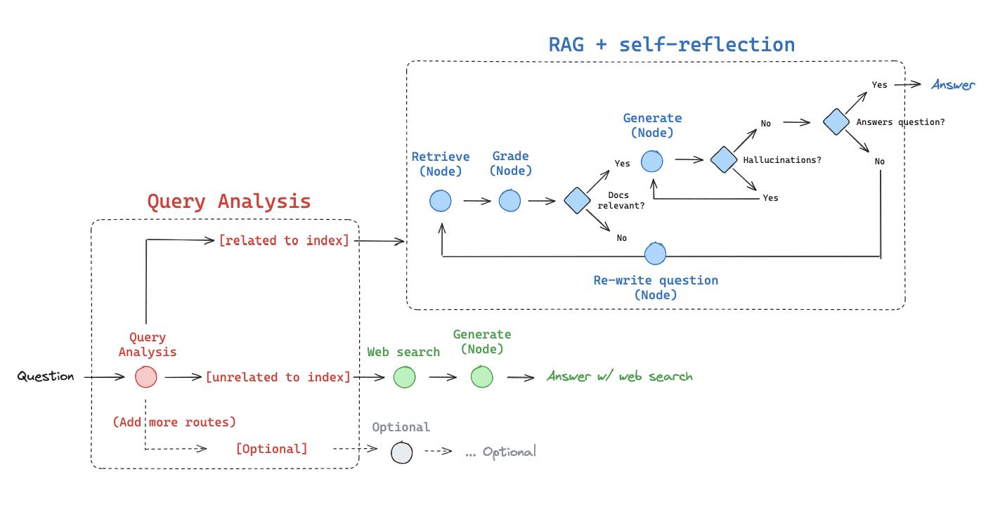
Web 搜索：Tavily
使用 Tavily 执行网络搜索，让 LLM 感知现实世界
特点：
- 快速响应：相比较搜索引擎能更快返回结果
- 良好摘要：无需加载页面的所有内容
- 结果优化：针对 LLM 优化的搜索结果，提高准确率
- SaaS 服务，需申请 Key: https://app.tavily.com
自适应 RAG
基于论文： https://arxiv.org/abs/2310.11511
特点：
- 对检索到的文档和生成的回答进行反思和评分，直到获得满意的回答
- 解决传统 RAG 粗暴检索固定数量段落以及回复准确性差的问题
- 显著提升长文本检索的准确性
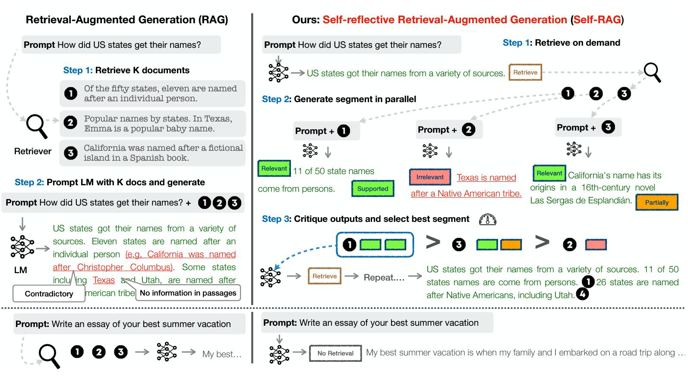
自适应 RAG 流程
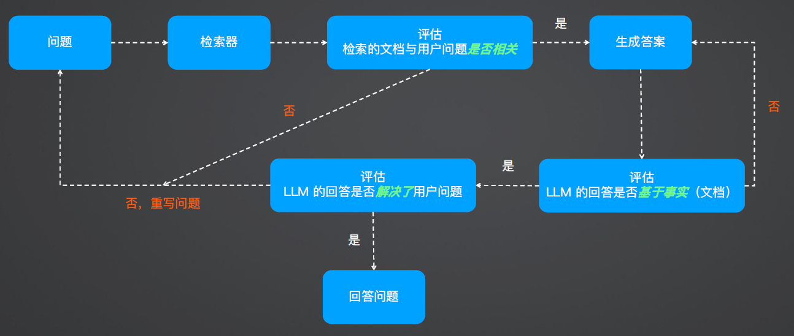
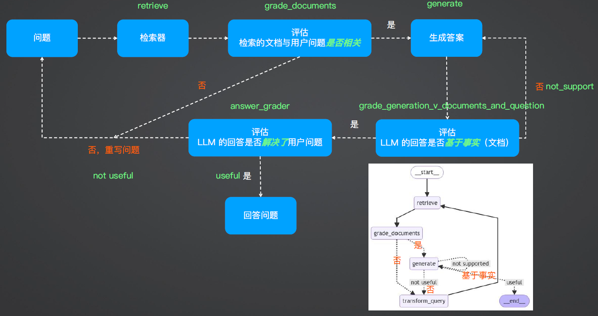
结合 Web Search 和 Self-RAG

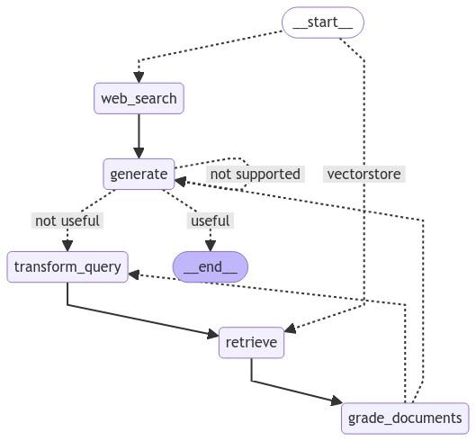